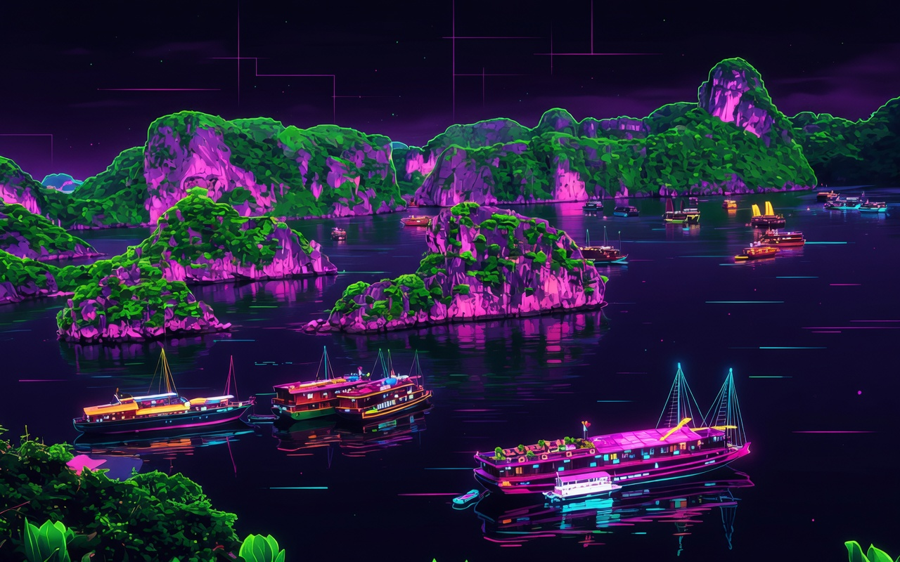

Hàng nghìn đảo đá karst lung linh dưới ánh trăng neon tương lai

Di sản kỳ vĩ dưới ánh trăng neon
Hàng nghìn đảo đá karst nhô lên từ mặt nước xanh ngọc. Trong LUNAR HERITAGE,
những đảo đá được bao phủ bởi ánh sáng neon huyền ảo, tạo nên không gian vừa cổ kính vừa tương lai rực rỡ.
🏛️
UNESCO 1994 & 2000
🪨
1.960 đảo đá
📏
1.553 km²
Khám phá Vịnh Hạ Long Neon
🌊
Đảo đá bay lơ lửng
Hàng trăm đảo đá được bao quanh bởi ánh sáng neon tím – xanh – vàng, tạo hiệu ứng hologram 3D sống động.
🚤
Du thuyền neon
Du thuyền hiện đại với đèn LED neon chạy dọc thân tàu, phản chiếu lung linh trên mặt nước.
🪨
Hang động cyber
Hang động được chiếu sáng bằng công nghệ neon, tạo hiệu ứng ánh sáng 3D lung linh chưa từng có.
LỊCH SỬ & DI SẢN
Vịnh Hạ Long là kỳ quan thiên nhiên thế giới, được UNESCO công nhận hai lần (1994 và 2000).
Trong LUNAR HERITAGE, chúng tôi tái tạo lại toàn bộ vịnh dưới ánh sáng neon tương lai,
kết hợp truyền thống với công nghệ 3D để bạn có thể bay lượn và khám phá từng đảo đá một cách sống động.